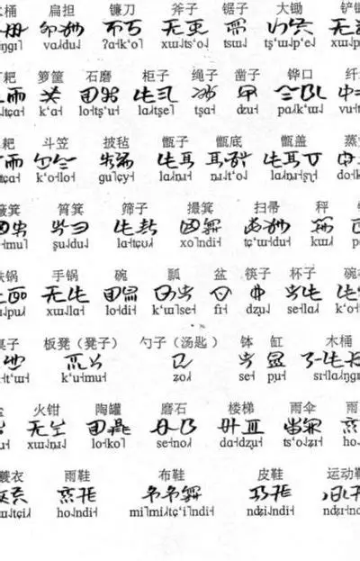

彝文简介
彝文是彝族使用的表意音节文字，史称"爨文"、"韪书"，有800-1000年历史。传统彝文有约一万个字，常用一千余字。
彝文是世界六大古文字中唯一仍在使用的文字，主要通行于川、滇、黔、桂四省区。

古彝文与规范彝文对照
声韵调系统
ꀀ
a
ꀃ
i
ꀆ
o
ꀉ
u
ꀏ
e
ꀒ
ie
ꀕ
ai
ꀘ
ei
点击字母听发音（需音频支持）
文字特点
- ●从左至右竖行书写
- ●无统一规范，各地有异
- ●象形、指事、会意兼备
- ●主要用于宗教仪式和文献
- ●1980年推行规范彝文
日常问候
日常交际用语
| 彝文 | 汉意 | 发音 |
|---|---|---|
| ꈎꏅꃅꄉ▶ | 你好 / 您好 | [kax shur mu da] |
| ꑭꆹꏿ▶ | 早上好 | [xie li qo] |
| ꇿꑟꀕ▶ | 谢谢 | [ka xie bbo] |
| ꇭꍣꄉ▶ | 对不起 / 抱歉 | [ggop zha da] |
| ꆎꆹꀋꉬꀐ▶ | 再见 | [nu li ax nge ox] |
家庭称谓
家庭成员称呼
| 彝文 | 汉意 | 发音 |
|---|---|---|
| ꀉꂾ▶ | 妈妈 / 母亲 | [a mat] |
| ꀉꄉ▶ | 爸爸 / 父亲 | [a dat] |
| ꀉꁧ▶ | 奶奶 / 外婆 | [a bbo] |
| ꀉꀕ▶ | 爷爷 / 外公 | [a bbo] |
| ꇭꀋ▶ | 哥哥 | [ggop a] |
| ꃀꀋ▶ | 姐姐 | [mot a] |
生活用语
日常生活表达
| 彝文 | 汉意 | 发音 |
|---|---|---|
| ꋚꁧ▶ | 吃饭 | [zza bbo] |
| ꑭꁨꄉ▶ | 喝水 | [xie bbu da] |
| ꑭꏢ▶ | 睡觉 | [xie ji] |
| ꆎꁧꇁ▶ | 你来 | [nu bbo la] |
| ꆎꄡꇁ▶ | 你别走 | [nu tap la] |
| ꆎꁧꎭ▶ | 你好吗？ | [nu bbo sha] |
数字时间
数字与数量
| 彝文 | 汉意 | 发音 |
|---|---|---|
| ꋍ▶ | 一 / 1 | [ci] |
| ꑍ▶ | 二 / 2 | [nie] |
| ꌕ▶ | 三 / 3 | [suo] |
| ꇖ▶ | 四 / 4 | [ly] |
| ꉬ▶ | 五 / 5 | [nge] |
| ꃘ▶ | 十 / 10 | [hxi] |
📚 课程分类
日常问候语
家庭称谓
生活用语
数字时间
节日文化
民歌民谣
🔍 快速查询
查询翻译
随机学词
📖 今日一句
ꈎꏅꃅꄉ
[kax shur mu da]
你好
这是彝族最常用的问候语，相当于汉语的"您好"。在火把节等节日见面时使用更显亲切。
🎯 学习进度
已掌握词汇
24 / 100
开始测试
保存进度
📱 移动端学习
扫描二维码下载彝汉双语学习APP，随时随地学习彝语。
二维码